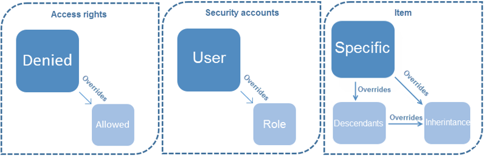

Assigning access rights
Overview of access rights and how they are assigned and inherited. Also how conflicting rights are handled.
In XM Cloud, you can assign access rights to a security account to determine the access that a user has to the items and functionality in XM Cloud. For example, the access rights on a security account can determine whether the user or role has the right to create items, delete items, or to push items through a workflow.
Each access right has one of three possible settings. They are:
Allow – grants the associated access rights for the selected account.
Deny – denies the associated access right for the selected account.
Inherit – neither grants nor denies an access right. Instead, you can use this setting to allow or deny the item the right to inherit the access rights that are assigned to the parent item.
In XM Cloud, when you assign access rights to items, they always inherit the access right that is assigned to their parent item in the content tree. However, if you need to, you can overrule the inherited rights on an item by assigning access rights specifically on the item or denying the item the right to inherit.
You can assign access rights to both users and roles. However, if you make your users members of roles and assign the access rights to the roles instead of the user, you simplify maintenance. In this way, you can assign and revoke access rights to multiple users by assigning or removing memberships to roles instead of having to do this for each individual user account.
For example, if an employee leaves your company or moves to another department, you simply remove them from certain roles and make them members of other ones. Similarly, when you hire new employees, you can just make them a member of the roles that possess the relevant access rights.
By only assigning access rights to roles, you also make it easier to control a user's individual access rights when you have to. For example, if you want to ensure that a user has access to a particular item for a limited period, you do not have to study all the roles that the user belongs to, you just grant the relevant access rights to the user’s security account. This setting overrules the access rights specified for the roles that the user is a member of. To revert to the standard settings, you just remove the specified access rights from the user’s security account.
A user can be a member of many different roles, and roles can also be members of other roles. When a role is a member of another role, the access rights of both roles are combined to give the users who are members of these roles the accumulated access rights of both roles.
If there are conflicting access rights between the user account and the roles, the following general rules apply:
|  |
Access rights – Denied overrides Allowed.
Security accounts – Access rights assigned to a user account override access rights assigned to a role.
Item – Access rights assigned specifically on an item override access rights specified for the descendants on the parent item.
Access rights assigned specifically on an item or on the descendants of an item override the Inheritance access right.
Rule
Example
When an access right is not specified, it is Denied.
The default value for access rights is Denied. Therefore, if an access right is not specified for an item, the security account does not have access to the item.
If nothing is specified for the Inheritance access right, inheritance is Allowed.
The default value for the Inheritance access right is Allowed. Therefore, if Inheritance is not denied, the item inherits the access rights from its ancestors.
Denied overrules Allowed.
If a user is a member of two roles, one that explicitly grants them an access right to an item and one that explicitly denies them the same access right to the item, they are denied the access right.
This also applies to the Inheritance access rights.
Access rights assigned to a user account overrule the access rights assigned to a role.
If an access right to an item is granted for a user account but denied for a role that the user account is a member of, then the user is granted the access right.
Access rights specifically assigned to an item for a user account overrule the access rights that are specifically assigned to an item for a role that the user is a member of.
If a user is a member of several roles and one of these roles is specifically denied an access right to an item, the user is denied the access right. However, if the user’s security account is specifically granted the same access right to the same item, the user is granted the access right.
Specifically assigned access rights to a user account overrule specifically assigned access rights to a role that the user is a member of.
If an access right for a user account is specifically granted to the descendants of an item and one of the roles that the user is a member of has the same access right specifically denied for the descendants of the item, the access right is granted to the descendent item.
Access rights specifically granted for an item, to either a user or a role, overrule the Inheritance access rights and any rights assigned to the descendants of the parent item.
If a user is a member of two roles, one that does not grant the user to inherit an access right to an item and another that explicitly grants the same access right, then the user is granted the access right.